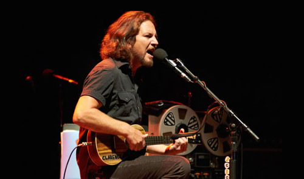
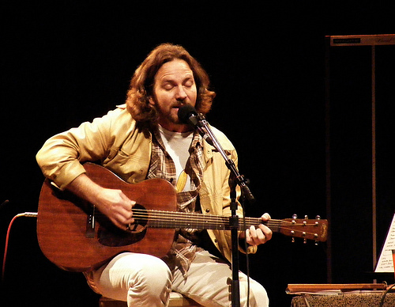
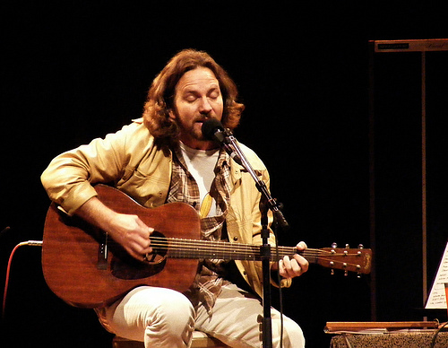

Eddie Vedder no Brasil 2014
O cantor Eddie Vedder vem para o Brasil em maio de 2014 para realizar três apresentações intimistas. O cantor se apresenta nos dias 06, 07 e 08 de maio no Citibank Hall, em São Paulo, e nos dias 11 e 12 de maio no Citibank Hall, no Rio de Janeiro. Os shows contam com abertura do artista de folk rock Glen Hansard. Além da renomada história com o Pearl Jam, Eddie possui uma aclamada carreira solo, pela qual já recebeu o Globo de Ouro de Melhor Canção Original, por “Guaranteed” (trilha sonora de Na Natureza Selvagem), e foi indicado ao Grammy de Melhor Álbum Folk, por Ukelele Songs (2011). Em turnê pela Austrália desde 07 de fevereiro, Eddie Vedder já apresentou diversos set lists no país, incluindo hits como “I Am Mine”, “Better Man”, “Just Breathe”, “Guaranteed”, “Society”, “You've Got to Hide Your Love Away” e “Blackbird” (The Beatles), “Girl From the North Country” (Bob Dylan), “I Believe in Miracles” (Ramones), “Growin’ Up” e “Bobby Jean” (Bruce Springsteen), “The Kids Are Alright” (The Who), “Rockin’ in the Free World” (Neil Young), entre outros. Os ingressos podem ser adquiridos na bilheteria do Citibank Hall nas duas cidades, pelo site da Tickets for Fun, pelo 4003-5588 ou nos demais pontos de venda em todo o país.Para comprar ingressos clique aqui!
 



Copywrong by vinikatunaric@gmail.com